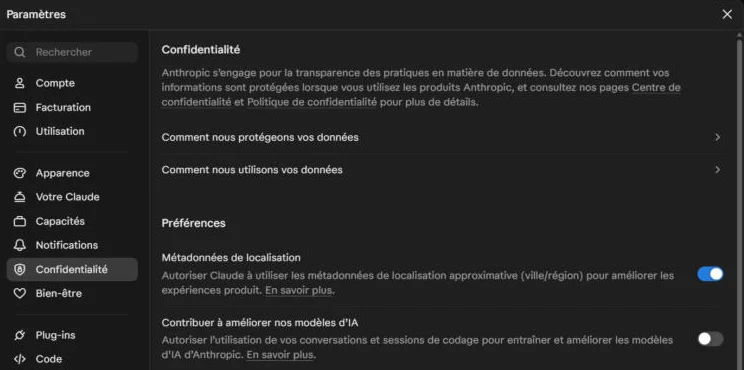
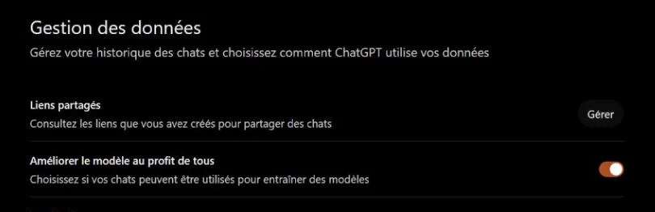
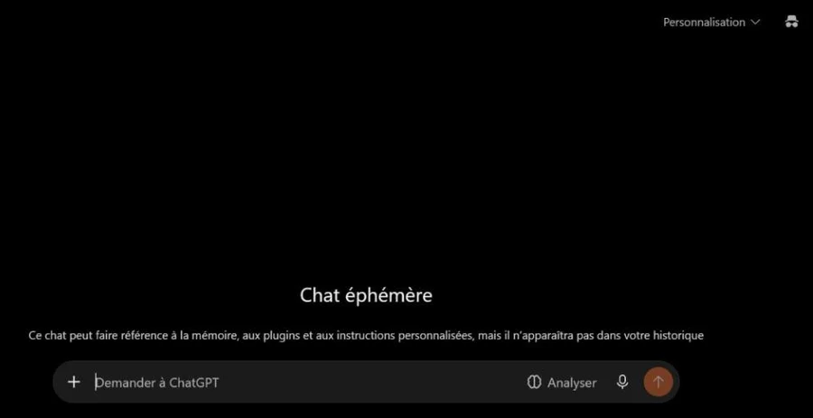

1
Claude : Confidentialité
Paramètres › Confidentialité › Contribuer à améliorer nos modèles d'IA
Clique sur ton nom en bas à gauche, puis Paramètres › Confidentialité. Éteins Contribuer à améliorer nos modèles d'IA.

ChatGPT et Claude peuvent se servir de tes conversations pour entraîner leurs prochains modèles. Un interrupteur suffit pour dire non, sans rien perdre.

Quand tu discutes avec une IA grand public, l'entreprise peut réutiliser tes conversations pour entraîner ses prochains modèles : tes questions, tes fichiers, ton code. Un interrupteur décide si c'est permis. Il est séparé de l'historique et de la mémoire : tu peux couper l'entraînement et tout garder.
Sur les comptes Free, Plus et Pro, le partage pour l'entraînement est activé tant que tu ne l'éteins pas.
ActivéDepuis fin 2025, Claude demande ton accord (case cochée d'office dans la fenêtre des nouvelles conditions). Si c'est allumé, tes conversations peuvent être gardées jusqu'à 5 ans.
À vérifierHistorique, mémoire, projets : tout reste. Seules tes nouvelles conversations ne servent plus à l'entraînement.
Sans perteUne conversation incognito (Claude) ou un chat éphémère (ChatGPT) ne sert pas à l'entraînement, même si l'interrupteur est allumé.
PonctuelLe réglage se trouve dans les Paramètres, sur le web comme dans l'appli, et il s'applique à tout ton compte.
Clique sur ton nom en bas à gauche, puis Paramètres › Confidentialité. Éteins Contribuer à améliorer nos modèles d'IA.

Clique sur ton profil, puis Paramètres › Gestion des données. Éteins Améliorer le modèle au profit de tous. L'historique reste en place.

Sur ChatGPT, clique sur l'icône en haut à droite d'une nouvelle conversation : Chat éphémère (pas d'historique, pas d'entraînement). Sur Claude, c'est le mode incognito.

Contrat, compte rendu, fichier client : éteins l'entraînement avant de les confier à l'IA.
Le cas Samsung (2023) : du code interne collé dans ChatGPT. Réglage éteint, ou mieux, une offre pro.
Bilan, ordonnance, question intime : passe en incognito ou en chat éphémère pour cette fois.
Pas besoin de tout supprimer : l'historique et la mémoire restent, seul l'entraînement s'arrête.
Le même réglage existe chez Gemini et Mistral : vérifie chaque compte, sur ordi et sur téléphone (le réglage suit le compte).
Toutes les grandes IA grand public ont un réglage pour refuser l'entraînement, mais pas au même endroit ni avec les mêmes valeurs par défaut.
Bon pour : un choix demandé à l'inscription ; 5 ans de conservation si c'est allumé, 30 jours sinon.
Bon pour : activé par défaut ; réglages séparés pour le mode vocal et Codex.
Bon pour : depuis le 16/11/2026, historique et entraînement se séparent (déploiement en cours) ; une partie des conversations est relue par des humains.
Bon pour : l'IA française : entraînement par défaut seulement en gratuit.

Chaque vidéo RepoPop Décode t'explique un sujet IA ou tech en moins d'une minute, avec sa fiche complète comme celle-ci.